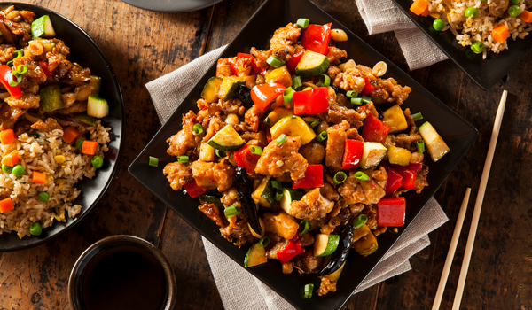
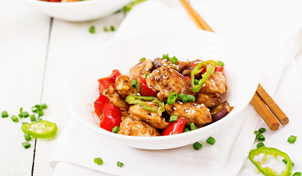
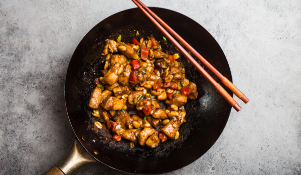

Ingredients of Kung Pao Chicken with Bell Peppers
- 1 pound boneless, skinless chicken breast, cut into 1/4-inch-thick slices
- 2 teaspoons reduced-sodium soy sauce plus 1 Tbsp., divided
- 1 teaspoon dry sherry plus 1 Tbsp., divided
- 2 teaspoons cornstarch
- 2 teaspoons toasted sesame oil
- 2 tablespoons unsalted chicken broth
- 2 teaspoons balsamic vinegar
- 2 teaspoons chile-garlic sauce
- 2 tablespoons vegetable oil, divided
- 3 slices fresh ginger, peeled and smashed
- 1 medium red bell pepper, cut into 1-inch squares
- 1 medium green bell pepper, cut into 1-inch squares
- ¼ teaspoon salt
- 2 tablespoons unsalted dry-roasted peanuts
Recipe of Kung Pao Chicken with Bell Peppers
- Combine chicken, 2 tsp. soy sauce, 1 tsp. sherry, and cornstarch in a medium bowl. Stir until the cornstarch
is no longer visible. Add sesame oil and stir until the chicken is lightly coated.
- Combine broth, vinegar, chile-garlic sauce, and the remaining 1 Tbsp. soy sauce and 1 Tbsp. sherry in a
small bowl. Set aside.
- Heat a 14-inch flat-bottomed carbon-steel wok (or a 12-inch stainless-steel skillet) over high heat until a
drop of water vaporizes within 1 to 2 seconds of contact. Swirl in 1 Tbsp. vegetable oil. Add ginger;
stir-fry until fragrant, about 10 seconds. Push the ginger slices to the sides and add the chicken in an
even layer. Cook, undisturbed, until it begins to brown, about 1 minute. Using a metal spatula, stir-fry the
chicken until lightly browned but not cooked through, about 1 minute more. Transfer to a plate.
- Swirl in the remaining 1 Tbsp. vegetable oil. Add bell peppers; stir-fry for 1 minute. Return the chicken to
the pan along with the reserved sauce; season with salt and stir-fry until the chicken is cooked through, 1
to 3 minutes. Remove from heat and sprinkle with peanuts.